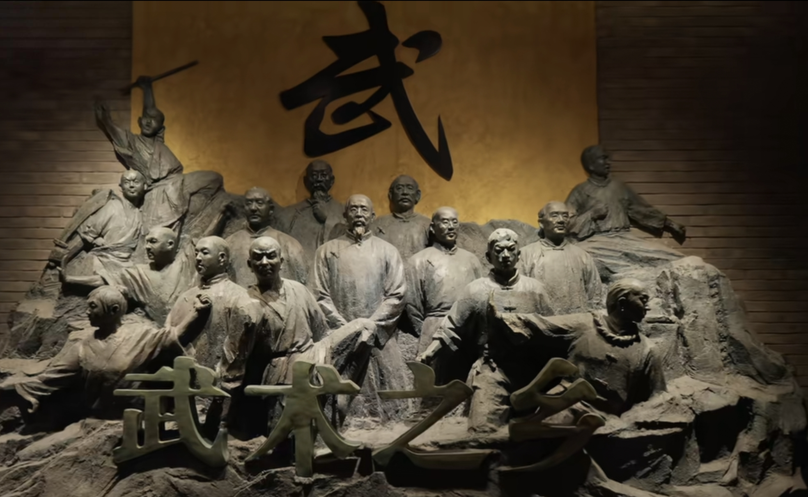

沧州武术之乡
沧州市地处河北东南部，东临渤海，南接齐鲁，北倚京津，号称京津南大门，历史上是兵家必争之地、商贾云集之处、人犯流放之所，人们习练攻防格斗之术以求生存， 因此武术盛行。据统计，沧州在明清时期出过武进士、武举人1937名，乾隆年间已成为华北一带的武术重镇。1992年，沧州被正式命名为全国首批“武术之乡”
沧州武术历史悠久，“源于春秋，兴于明朝，盛于清代，清末民初甚为繁盛”。沧州的武术门派众多，有八极、劈挂、燕青、八卦、六合、查滑、功力、太祖等53个拳种，占全国129个武术门派拳种 的40.3%，各门派均具有刚猛剽悍、力度丰满、长短兼备、朴中寓鲜的风格特点。近几百年来，沧州武术精英荟萃，涌现出丁发祥、霍元甲、王子平等大批高人义士，为御外辱、扬国威、 光大中华精神作出了巨大贡献。
沧州武术独树一帜，除有代表性拳种的8大门派以外，疯魔棍、苗刀、戳脚、阴阳枪等拳械为沧州所独有。沧州武术还兼收并蓄，积累了雄厚的传统武术资源，近年来又吸纳跆拳道和规范武术套路 等积极成分，取得新的发展。沧州武术刚劲威猛，技击性强，既有大开大阖的勇猛长势，又有推拨擒拿的绝技巧招，一招一式中无不体现着中华文化中阴阳、内外、刚柔、方圆、天地、义理等源于 儒、释、道的理念和意蕴。
习练沧州武术可以提高人的身体素质，锻炼人的精神品格，促进人的全面发展，丰富和完善中华乃至国际武术文化，还可以进一步带动武术培训、表演、竞赛、交流、节庆会展、 器械生产交易等多种相关行业的发展。但是，沧州武术技艺以口传心授为主要传承方式，老拳师文化水平低，“学问都在肚子里”，而他们年事已高，许多绝技妙招濒临失传，急需保护和抢救。
